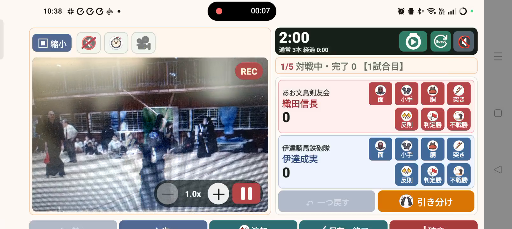

KENDO SCORE
大切な一本を、記録に。
次の一戦に、つなげよう。
剣道の試合記録、録画、結果の共有、成績の振り返りをひとつに。仲間が記録した試合も取り込んで、選手の歩みを残せます。
Android・iPhone対応 · 個人戦・団体戦に対応
録画しながら、一本を記録。

できること
試合の前も、後も。
記録が役に立つ6つの機能。
01
仲間の記録を取り込む
別の会場で記録した試合も、自分の履歴に。大会を選び、選手を確認して取り込めます。
02名前と所属を整える
誤字は修正。重複は統合。同じ選手の記録をまとめ、振り返りやすくします。
03録画しながら一本を残す
カメラ映像とスコアを一緒に確認。タイマーとブザーで試合の進行を支えます。
04パンフレットを文字にする
カメラOCRで選手名・所属名を読み取り。確認してから一覧に登録できます。
05結果表をみんなへ届ける
個人戦・団体戦の結果表、リーグ戦の勝敗数と順位を、LINEなどへ画像で共有できます。
06成績から次の一戦へ
勝率、決め手、取られた決め手。たまった試合と動画から、練習の課題を見つけます。
紹介ショート動画
剣道アプリの決定版！
動画で機能をチェック。
剣道の試合映像から始まる約57秒の紹介動画です。録画・タイマー・試合記録、パンフレットからの選手取込、結果の共有、クラブ内での試合データ統合と選手成績の確認を紹介します。
Android・iPhoneの両方で使えます。
このページで再生できない場合は、上のリンクからYouTubeでご覧ください。
録画とタイマーの使い方 →操作マニュアル
画面を見ながら、
ひとつずつ。
織田信長、武田信玄、真田幸村などの戦国武将を使った画面例で説明します。名前の修正と統合、データの取込も、順を追って確認できます。
2026年9月16日版 · 無料で閲覧・ダウンロードできます。